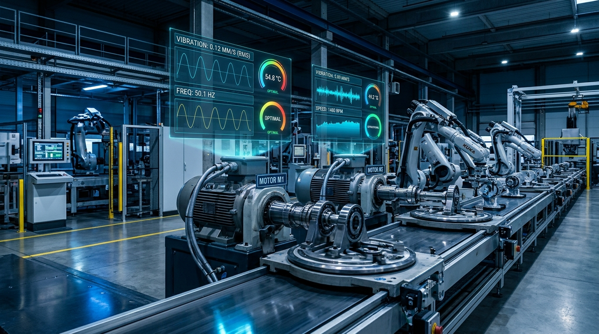
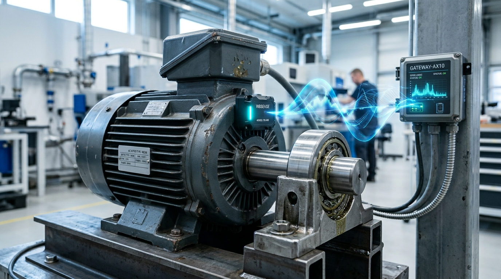
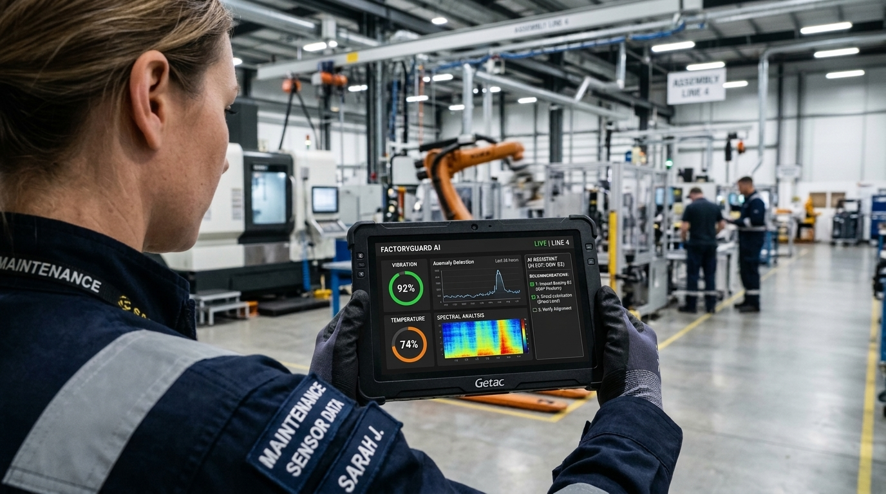

진동·음향·온도·전류 멀티모달 시계열 AI로 설비 고장 전조 증상과 잔여 수명(RUL)을 사전 예측하고, XAI 원인 분석과 RAG 정비 매뉴얼 코파일럿으로 현장 조치를 자동화합니다.

설비 결함 발생(P)부터 기능적 고장(F) 사이의 골든타임에 진동·음향 주파수 미세 이상을 포착하여 과잉 정비와 돌발 정지를 동시에 해결합니다.
진동·음향·온도·전류 시계열의 미세 이상 패턴을 포착해 고장 도달 시점을 사전 예보
베어링 마모, 축 정렬 불량, 과열 등 고장 유형을 분류하고 판단 근거 센서·주파수 제시
설비 매뉴얼과 과거 수리 이력을 기반으로 점검 절차와 조치 체크리스트를 즉각 제공

현장에서 설비 알람을 확인하고 직접 점검·수리를 수행하는 실무자

공장 가동률(OEE), 납기 준수, 정비 예산 및 산업안전을 총괄하는 관리자
다변량 센서 기반 설비별 건전성 점수(0~100) 실시간 산출 및 미세 이상 조기 포착
"72시간 내 베어링 내륜 마모 임계 도달" 등 예상 고장 시점과 원인별 확률 제시
SHAP 분석으로 이상 점수를 유발한 핵심 센서 채널과 주파수 대역 기여도 제시
설비 매뉴얼·정비 이력 DB를 검색해 필요 공구, 부품 번호, 수리 절차를 대화형 안내
| 비교 항목 | 기존 설비 모니터링 (SCADA/CMS) | 기존 대기업 예지보전 솔루션 | FactoryGuard AI (제안 서비스) |
|---|---|---|---|
| 이상 탐지 방식 | 고정 임계치(Threshold) 기반 단순 경보 | 고가 전용 장비 기반 복합 분석 | 비지도 시계열 AI 기반 미세 전조 증상 사전 포착 |
| 오경보 및 설명력 | 잦은 오경보, 구체적 고장 원인 파악 불가 | 블랙박스 AI 모델로 현장 작업자 납득 어려움 | XAI(SHAP) 기반 이상 원인 센서·주파수 근거 제시 |
| 사후 조치 연결 | 경보만 발생 (조치는 숙련공 경험에 의존) | 별도 데이터 분석가 및 전문 컨설팅 필요 | RAG 코파일럿이 매뉴얼 기반 즉각적 정비 가이드 제공 |
| 도입 비용·장벽 | 낮음 (단순 모니터링으로 기능 한계 명확) | 매우 높음 (수억 원대 초기 구축 비용) | 기존 설비에 IoT 센서 부착만으로 도입하는 경량 SaaS |
| 모듈 | 적용 AI 기술 | 기술 선택 이유 |
|---|---|---|
| 특징 추출 | FFT / STFT | 베어링·기어 결함은 시간 축보다 고유 주파수 에너지 변화에서 최초 포착됨 |
| 이상 탐지 | LSTM-AE | 고장 데이터가 희소한 공장 특성상 정상 데이터만으로 비지도 학습 필수 |
| 분류 & RUL | 1D-CNNBi-LSTM | 스펙트로그램 파형 패턴 추출(1D-CNN)과 장기 열화 궤적 예측(Bi-LSTM) 결합 |
| 설명 & 가이드 | SHAPLLM RAG | 수치적 진단 근거(SHAP) 제시 및 환각 없는 설비 매뉴얼 기반 정비 지침 생성 |
[제조 설비 센서 (진동/음향/온도/전류)] ──▶ [Edge Gateway (노이즈 제거 / FFT 변환)] ──▶ [FastAPI / MQTT 수집 서버]
│
┌─────────────────────────────────────────────────────────────────────────────────────┼─────────────────────────────────────────┐
▼ ▼ ▼
[InfluxDB (시계열) / PostgreSQL] ◀──▶ [AI Engine: LSTM-AE 이상탐지 ➔ 1D-CNN/Bi-LSTM 고장·RUL 예측 ➔ SHAP 원인분석] ──▶ [RAG 코파일럿 (LLM + 매뉴얼 Vector DB)]
│ │
└───────────────────────┬─────────────────────────┘
▼
[현장 관제 웹 대시보드 (Web) & 작업자 정비 가이드 앱 (Mobile)]
| 담당자 (역할) | 주요 담당 영역 | 세부 기여 및 수행 내용 |
|---|---|---|
| 팀원 1 PM / 서비스 기획 |
프로젝트 총괄 및 도메인 리서치 | • 스마트 팩토리 산업 현황 및 중소 제조 현장 페인포인트 심층 조사 • 서비스 요구사항 정의, 타겟 페르소나·시나리오 설계, 발표 스토리라인 총괄 |
| 팀원 2 Data Engineer |
센서 데이터 수집 및 신호 전처리 | • 다변량 회전 설비 데이터셋(진동·음향·온도) 수집, 결측/노이즈 정제 • 슬라이딩 윈도우 분할, 시간 통계 피처 및 FFT/STFT 주파수 특징 추출 파이프라인 구축 |
| 팀원 3 AI Modeling 1 |
비지도 시계열 이상 탐지 모델링 | • 정상 운전 데이터 기반 LSTM-Autoencoder / Anomaly Transformer 설계 • 복원 오차 기반 설비 건전성 지수(Health Index) 산출 및 동적 임계치 최적화 |
| 팀원 4 AI Modeling 2 |
고장 분류, RUL 예측 및 XAI | • 1D-CNN + LightGBM 고장 유형 분류 및 Bi-LSTM 잔여 수명 예측 설계 • SHAP 기반 고장 판단 근거(핵심 센서 채널·주파수 대역 기여도) 추출 로직 설계 |
| 팀원 5 Backend / RAG & UI |
시스템 아키텍처 및 RAG·대시보드 | • 전체 시스템 아키텍처 및 실시간 데이터 서빙 구조(FastAPI / InfluxDB) 설계 • 설비 매뉴얼 기반 RAG 정비 코파일럿 및 실시간 관제 대시보드 UI/UX 프로토타입 설계 |